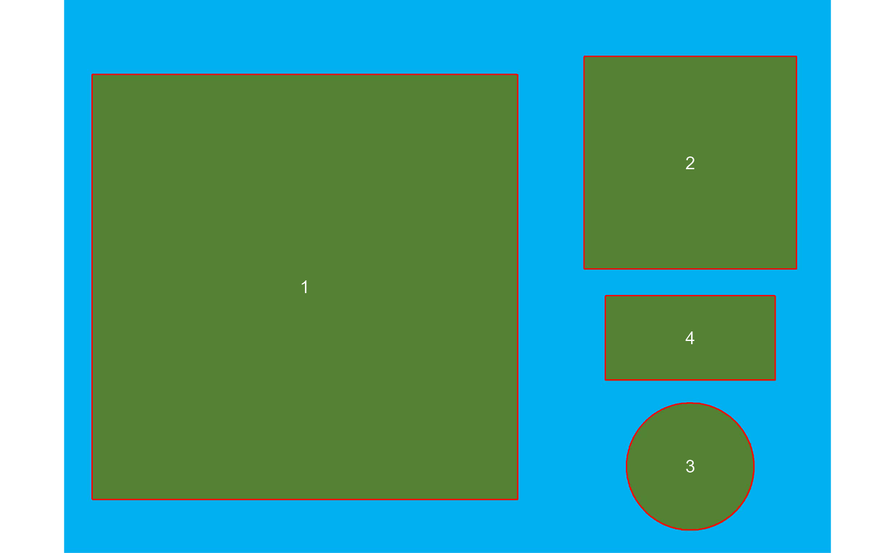

get_measures() computes object measures (area, perimeter, radius) by using
either a known resolution (dpi) or an object with known measurements.
plot_measures() draws the object measures given in an object to the
current plot. The object identification ("id") is drawn by default.
get_measures( object, id = NULL, measure = NULL, dpi = NULL, sep = "\\_|-", verbose = TRUE, digits = 3 ) plot_measures( object, measure = "id", hjust = NULL, vjust = NULL, digits = 2, size = 0.9, col = "white", ... )
| object | An object computed with |
|---|---|
| id | An object in the image to indicate a known value. |
| measure | For
|
| dpi | A known resolution of the image in DPI (dots per inch). |
| sep | Regular expression to manage file names. The function combines in
the |
| verbose | If |
| digits | The number of significant figures. Defaults to |
| hjust, vjust | A numeric value to adjust the labels horizontally and vertically. Positive values will move labels to right (hjust) and top (vjust). Negative values will move the labels to left and bottom, respectively. |
| size | The size of the text. Defaults to |
| col | The color of the text. Defaults to |
| ... | Further arguments passed on to |
For get_measures(), if measure is informed, the pixel values will be
corrected by the value of the known object, given in the unit of the
right-hand side of measure. If dpi is informed, then all the measures
will be adjusted to the known dpi.
If applied to an object of class anal_obj, returns a data frame with the
object id and the (corrected) measures.
If applied to an object of class anal_obj_ls, returns a list of class
measures_ls, with two objects: (i) results, a data frame containing
the identification of each image (img) and object within each image (id);
and (ii) summary a data frame containing the values for each image. If
more than one object is detected in a given image, the number of objects
(n), total area (area_sum), mean area (area_mean) and the standard
deviation of the area (area_sd) will be computed. For the other measures
(perimeter and radius), the mean values are presented.
plot_measures() returns a NULL object, drawing the text according to
the x and y coordinates of the objects in object.
# Image with four objects with a known resolution of 300 dpi # Higher square: 10 x 10 cm # Lower square: 5 x 5 cm # Rectangle: 4 x 2 cm # Circle: 3 cm in diameter # Count the objects using the blue band to segment the image results <- analyze_objects(img, index = "B")plot_measures(results, measure = "id")# Get object measures by declaring the known resolution in dots per inch (measures <- get_measures(results, dpi = 300))#> id x y area area_ch perimeter radius_mean radius_min #> 1 1 669.000 798.000 99.982 99.813 39.920 5.732 4.994 #> 2 2 1737.502 453.000 24.996 24.911 19.947 2.864 2.491 #> 3 3 1737.590 1296.339 7.050 7.044 8.551 1.494 1.481 #> 4 4 1737.496 939.498 7.984 7.934 11.904 1.671 0.993 #> radius_max radius_sd radius_ratio diam_mean diam_min diam_max major_axis #> 1 7.058 74.266 1.413 11.464 9.989 14.117 11.546 #> 2 3.528 37.117 1.416 5.728 4.983 7.055 5.778 #> 3 1.506 0.567 1.017 2.988 2.963 3.013 2.997 #> 4 2.224 49.872 2.239 3.341 1.987 4.448 4.614 #> minor_axis eccentricity theta solidity circularity #> 1 0.098 0.002 0.785 1.002 0.788 #> 2 0.049 0.058 1.571 1.003 0.789 #> 3 0.025 0.036 0.028 1.001 1.212 #> 4 0.039 0.866 0.000 1.006 0.708# Calculated diagonal of the object 1 # 10 * sqrt(2) = 14.14 # Observed diagonal of the object 1 measures[1, "radius_max"] * 2#> [1] 14.116# Get object measures by declaring the known area of object 1 get_measures(results, id = 1, area ~ 100)#> ----------------------------------------- #> measures corrected with: #> object id: 1 #> area : 100 #> ----------------------------------------- #> Total : 140.037 #> Average : 35.009 #> -----------------------------------------#> id x y area area_ch perimeter radius_mean radius_min #> 1 1 669.000 798.000 100.000 99.831 39.924 5.733 4.995 #> 2 2 1737.502 453.000 25.000 24.915 19.949 2.864 2.492 #> 3 3 1737.590 1296.339 7.051 7.046 8.552 1.494 1.481 #> 4 4 1737.496 939.498 7.986 7.935 11.905 1.671 0.994 #> radius_max radius_sd radius_ratio diam_mean diam_min diam_max major_axis #> 1 7.059 74.266 1.413 11.465 9.989 14.118 11.547 #> 2 3.528 37.117 1.416 5.728 4.983 7.056 5.778 #> 3 1.506 0.567 1.017 2.989 2.963 3.013 2.997 #> 4 2.224 49.872 2.239 3.341 1.987 4.448 4.614 #> minor_axis eccentricity theta solidity circularity #> 1 0.098 0.002 0.785 1.002 0.788 #> 2 0.049 0.058 1.571 1.003 0.789 #> 3 0.025 0.036 0.028 1.001 1.212 #> 4 0.039 0.866 0.000 1.006 0.708# }